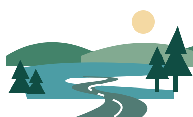

Siirry sisältöön
Matkaile Suomessa
Vapaus kulkea · Ilo löytää
Valikko ☰
Paikkakunnat
Yöpymispaikat
Pysähdy matkalla
Suunnittele reitti
Karavaanarin vinkit
Omat matkat
Parhaat paikat, pysähdykset ja elämykset unohtumattomiin kotimaan matkoihin.

Hae kohdetta tai paikkakuntaa
Hae kohteita
Paikkakunnat
Tutustu kuntiin ympäri Suomen
›
Yöpymispaikat
Leirintäalueet ja matkaparkit
›
Pysähdy matkalla
Nähtävyydet, kahvilat ja palvelut
›
Suunnittele reitti
Ideat, reitit ja vinkit matkallesi
›
Karavaanarin vinkit
Hyödyllistä tietoa matkailuun
›
Omat matkat
Tallenna suosikit ja pidä matkamuistoja
›
Koti
Paikkakunnat
Pysähdy matkalla
Omat matkat